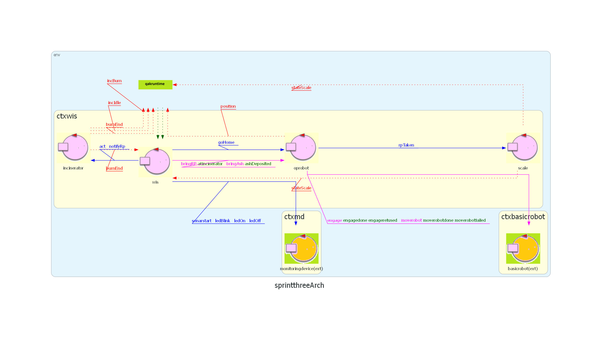
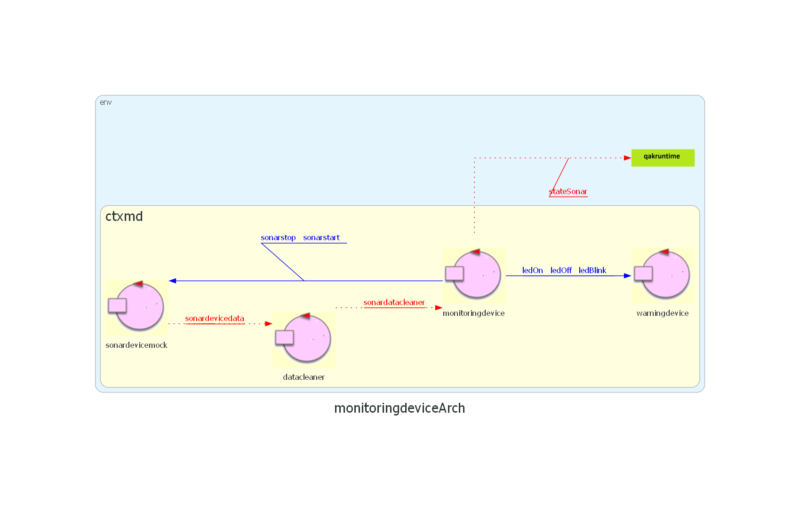
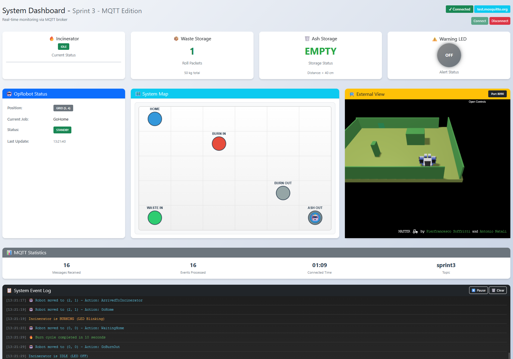

Introduzione
Un'azienda intende sviluppare un WasteIncineratorService per il trattamento dei rifiuti tramite incenerimento e necessita di un servizio di sistema software (WIS) per controllare un robot (OpRobot) per lo spostamento dei rifiuti.
Questo documento contiene lo Sprint 3 del progetto, che si concentra sul livello di presentazione e sul deployment del contesto del MonitoringDevice sul Raspberry, estendendo il lavoro svolto nello Sprint 2.
L'obiettivo principale è lo sviluppo della ServiceStatusGUI, un'interfaccia web che permette agli operatori di visualizzare lo stato del sistema in tempo reale, e la conseguente integrazione con il Sonar fisico montato sul Raspberry. In questa fase viene introdotta un'architettura Event-Driven basata su protocollo MQTT, finalizzata a disaccoppiare la logica di controllo dalla visualizzazione e a garantire aggiornamenti reattivi dello stato dei componenti.
Sprint 3
Obiettivo principale
Implementare un'interfaccia grafica web-based (ServiceStatusGUI) che visualizzi lo stato di tutti i componenti del WasteIncineratorService.
Requisiti Funzionali
Come specificato dai requisiti, la ServiceStatusGUI deve fornire le seguenti informazioni:
- RF3.1 - Stato Incinerator: Visualizzazione se spento (Off), acceso (On), o in attesa (Idle);
- RF3.2 - Stato WasteStorage: Numero di RP presenti, calcolato dal peso misurato dalla Scale;
- RF3.3 - Stato AshStorage: Indicazione se il deposito ceneri è pieno o meno;
- RF3.4 - Stato OpRobot: Posizione corrente e attività in corso.
Requisiti non funzionali
- RNF3.1 - Coerenza con sprint precedenti: utilizzo di Gradle come build tool per il backend QAK;
- RNF3.2 - Accessibilità: interfaccia utilizzabile da qualsiasi browser moderno;
- RNF3.3 - Semplicità architetturale: separazione chiara tra business logic e presentation;
- RNF3.4 - Reattività: interfaccia real-time.
Analisi del Problema
P3.1 - Consolidamento dell'Infrastruttura Distribuita
Durante la fase di validazione dello Sprint 2, sono emerse criticità nella gestione della comunicazione diretta tra il nodo WIS (PC) e il Monitoring Device (Raspberry Pi).
La gestione punto-punto (TCP) tra i due contesti ha evidenziato rigidità nella configurazione di rete (necessità di conoscere a priori gli IP esatti) e fragilità in caso di disconnessioni temporanee.
Per garantire la robustezza del sistema distribuito, si decide di evolvere l'architettura di comunicazione introducendo formalmente un Broker MQTT come mediatore (Message Bus) tra i nodi computazionali.
Vantaggi dell'introduzione del Broker nel Backend:
- Disaccoppiamento Spaziale: ctxWIS e ctxMD non devono più conoscersi reciprocamente tramite IP diretto. Entrambi devono conoscere solo l'indirizzo del Broker (es.
test.mosquitto.org).
- Gestione Eventi Globali: Gli eventi emessi dal Sonar (es. stateSonar) vengono pubblicati sul broker e distribuiti automaticamente a tutti gli attori interessati (WIS, e successivamente la GUI).
- Resilienza: Il protocollo MQTT gestisce meglio le micro-disconnessioni tipiche delle reti WiFi (su cui opera il Raspberry Pi) rispetto a socket TCP crudi.
P3.2 - Revisione Gestione Warning Device
Rispetto alle iterazioni precedenti, viene modificata la catena di controllo per la gestione degli allarmi.
Il WIS mantiene la logica di emissione dei comandi (ledOn, ledOff, ledBlink), ma li indirizza al MonitoringDevice invece che direttamente al WarningDevice.
Questa scelta architetturale apporta significativi vantaggi in termini di manutenibilità:
- Disaccoppiamento:
Il WIS non possiede più alcun riferimento al componente fisico di allarme (WarningDevice). Esso interagisce esclusivamente con il MonitoringDevice, che agisce da intermediario.
Questo garantisce che il WIS rimanga "agnostico" rispetto alla natura reale del WarningDevice (che in futuro potrebbe essere, ad esempio, una sirena o un display invece che led).
- Localizzazione delle Modifiche:
In caso di sostituzione dell'hardware utilizzato per il WarningDevice (es. da led a sirena), l'impatto della modifica ricadrà esclusivamente sul MonitoringDevice (che dovrà mappare i messaggi ricevuti sul nuovo device). Il codice del WIS rimarrà invariato, poiché continuerà a inviare i medesimi messaggi al suo unico interlocutore noto.
- Pattern di Delega:
Il MonitoringDevice riceve i comandi operativi dal WIS e li delega al dispositivo concreto configurato al suo interno (
delegate ledOn to warningdevice).
Il sistema continuerà a mantenere la stessa logica operativa; comuqnue, la rimozione di questa dipendenza diretta ottimizza l'architettura, aumentando significativamente la riusabilità del codice del componente WIS.
P3.3 - Strategia Interfaccia
Per soddisfare il requisito di un'interfaccia utente flessibile e reattiva, l'analisi suggerisce l'adozione di una WebApp Statica (basata su HTML, CSS, JavaScript), evitando l'introduzione di un server backend dedicato (come Spring Boot) per la gestione della vista.
Questa scelta architetturale è motivata da tre fattori principali:
- Separazione delle Responsabilità:
Si mantiene una netta distinzione tra la logica di controllo (WIS/MonitoringDevice) e la logica di visualizzazione. Rimuovendo il backend della GUI, l'interfaccia diventa un componente esterno e indipendente il cui ciclo di vita non interferisce con quello del sistema.
- Elaborazione Client-Side:
Spostando la logica di aggiornamento direttamente nel browser (tramite JavaScript), si riduce il carico computazionale sui nodi del sistema (PC e Raspberry Pi), che devono solo preoccuparsi di emettere i dati.
- Predisposizione al "Real-Time":
Una soluzione basata su JavaScript permette di gestire in modo efficiente aggiornamenti asincroni e immediati dello stato, superando i limiti delle classiche pagine web che richiedono ricaricamenti continui.
P3.4 - Architettura della Comunicazione (Polling vs Event-Driven)
Per abilitare l'aggiornamento dinamico dei dati sulla GUI, sono state analizzate due strategie di comunicazione:
Opzione A: HTTP Polling (Scartata)
- Meccanismo: Il browser invia richieste periodiche al server (es. ogni secondo) per verificare la presenza di nuovi dati.
- Criticità: Approccio inefficiente che genera traffico di rete inutile quando il sistema è in attesa (idle).
Inoltre, forza un paradigma Request-Response sincrono che mal si adatta alla natura asincrona e guidata principalmente da eventi.
Opzione B: MQTT over WebSockets - SCELTA
- Meccanismo: La WebApp apre una connessione persistente (WebSocket) verso il Broker MQTT, sottoscrivendosi ai topic di interesse.
- Vantaggi Architetturali:
- Reattività (Push): L'aggiornamento è istantaneo ed avviene solo all'effettivo cambio di stato (Event-Driven).
- Coerenza Distribuita:
Poiché i componenti ctxWIS e ctxMD operano su nodi computazionali distinti (PC e Raspberry Pi), la presenza di un Broker MQTT è già un requisito infrastrutturale indispensabile per permettere la visibilità degli eventi globali tra i contesti.
Di conseguenza, estendere l'uso di MQTT alla GUI è una scelta naturale che massimizza il riuso dell'infrastruttura esistente senza introdurre nuovi protocolli.
P3.5 - Topologia dell'Informazione
L'architettura non prevede server intermedi per l'adattamento dei dati. La GUI si configura come un client MQTT puro, partecipando allo stesso livello degli attori del sistema.
L'intero scambio informativo (eventi di stato, comandi) converge sul topic MQTT sprint3, come definito nei modelli QAK.
Ruolo del Broker: Il Broker (es. test.mosquitto.org) agisce come unico punto di verità e instradamento, garantendo che la vista (GUI) sia sempre coerente con lo stato del sistema.
P3.6 - Parsing dei dati
Poiché non esiste un backend intermedio di traduzione, la GUI deve gestire il disallineamento tra il formato nativo degli attori e il mondo Web. Il sistema QAK emette stringhe strutturate in stile Prolog:
msg(MSGID, MSGTYPE, SENDER, RECEIVER, CONTENT, SEQNUM)
Tramite espressioni regolari (Regex) in JavaScript, estrarrà dal messaggio grezzo il payload significativo (es. stateSonar(40) o position(X,Y)) per aggiornare il documento.
WIS - Architettura Logica


Progettazione
Architettura Logica della WebApp (Client-Side MVC)
Sulla base dell'analisi, la progettazione del frontend si concretizza in una Single Page Application (SPA) priva di backend, che agisce come un client MQTT puro.
Per garantire ordine e manutenibilità, l'applicazione implementa il pattern Model-View-Controller (MVC):
-
Model (Stato dei Dati):
È isolato nell'oggetto globale JavaScript
systemState, che funge da, appunto, stato attuale del sistema.
Esso mantiene in memoria i valori del sistema (come wasteStorageWeight, ashStorageFull o le coordinate robotPosition) indipendentemente da come vengono visualizzati a schermo.
-
View (Interfaccia Grafica):
Si compone della struttura statica definita in
index.html e della logica di stile in dashboard.css.
La vista è priva di logica di controllo per natura architettonica: si limita a riflettere lo stato, ad esempio applicando classi CSS dinamiche come .led-blink o .led-on in base ai comandi ricevuti.
-
Controller (Gestione Logica):
Implementato nel file
dashboard-mqtt.js, funge da orchestratore.
Il cuore del controller è la funzione handleMQTTMessage, che riceve i messaggi grezzi dal Broker, li decodifica tramite Espressioni Regolari (Regex) e aggiorna il Model. Successivamente, invoca le funzioni di aggiornamento della UI (come drawMap() o updateLED()) per allineare la vista al nuovo stato.
Gestione della Comunicazione (WebSockets)
Per superare il limite dei browser che non supportano socket TCP crudi, si utilizza il protocollo MQTT over WebSockets.
Il client JavaScript utilizza la libreria mqtt.js per stabilire una connessione verso la porta 8080 del broker (es. test.mosquitto.org).
const MQTT_CONFIG = {
broker: 'ws://test.mosquitto.org:8080',
topic: 'sprint3',
options: {
keepalive: 60, // Heartbeat ogni 60s
clean: true, // Sessione pulita ad ogni avvio
reconnectPeriod: 5000 // Tentativo di riconnessione automatico
}
};
Strategia di Parsing (Il problema dell'Impedance Mismatch)
- RNF3.1 - Coerenza con sprint precedenti: utilizzo di Gradle come build tool per il backend QAK;
- RNF3.2 - Accessibilità: interfaccia utilizzabile da qualsiasi browser moderno;
- RNF3.3 - Semplicità architetturale: separazione chiara tra business logic e presentation;
- RNF3.4 - Reattività: interfaccia real-time.
Analisi del Problema
- Disaccoppiamento Spaziale: ctxWIS e ctxMD non devono più conoscersi reciprocamente tramite IP diretto. Entrambi devono conoscere solo l'indirizzo del Broker (es.
test.mosquitto.org). - Gestione Eventi Globali: Gli eventi emessi dal Sonar (es. stateSonar) vengono pubblicati sul broker e distribuiti automaticamente a tutti gli attori interessati (WIS, e successivamente la GUI).
- Resilienza: Il protocollo MQTT gestisce meglio le micro-disconnessioni tipiche delle reti WiFi (su cui opera il Raspberry Pi) rispetto a socket TCP crudi.
- Disaccoppiamento: Il WIS non possiede più alcun riferimento al componente fisico di allarme (WarningDevice). Esso interagisce esclusivamente con il MonitoringDevice, che agisce da intermediario. Questo garantisce che il WIS rimanga "agnostico" rispetto alla natura reale del WarningDevice (che in futuro potrebbe essere, ad esempio, una sirena o un display invece che led).
- Localizzazione delle Modifiche: In caso di sostituzione dell'hardware utilizzato per il WarningDevice (es. da led a sirena), l'impatto della modifica ricadrà esclusivamente sul MonitoringDevice (che dovrà mappare i messaggi ricevuti sul nuovo device). Il codice del WIS rimarrà invariato, poiché continuerà a inviare i medesimi messaggi al suo unico interlocutore noto.
- Pattern di Delega:
Il MonitoringDevice riceve i comandi operativi dal WIS e li delega al dispositivo concreto configurato al suo interno (
delegate ledOn to warningdevice). - Separazione delle Responsabilità: Si mantiene una netta distinzione tra la logica di controllo (WIS/MonitoringDevice) e la logica di visualizzazione. Rimuovendo il backend della GUI, l'interfaccia diventa un componente esterno e indipendente il cui ciclo di vita non interferisce con quello del sistema.
- Elaborazione Client-Side: Spostando la logica di aggiornamento direttamente nel browser (tramite JavaScript), si riduce il carico computazionale sui nodi del sistema (PC e Raspberry Pi), che devono solo preoccuparsi di emettere i dati.
- Predisposizione al "Real-Time": Una soluzione basata su JavaScript permette di gestire in modo efficiente aggiornamenti asincroni e immediati dello stato, superando i limiti delle classiche pagine web che richiedono ricaricamenti continui.
- Meccanismo: Il browser invia richieste periodiche al server (es. ogni secondo) per verificare la presenza di nuovi dati.
- Criticità: Approccio inefficiente che genera traffico di rete inutile quando il sistema è in attesa (idle). Inoltre, forza un paradigma Request-Response sincrono che mal si adatta alla natura asincrona e guidata principalmente da eventi.
- Meccanismo: La WebApp apre una connessione persistente (WebSocket) verso il Broker MQTT, sottoscrivendosi ai topic di interesse.
- Vantaggi Architetturali:
- Reattività (Push): L'aggiornamento è istantaneo ed avviene solo all'effettivo cambio di stato (Event-Driven).
- Coerenza Distribuita: Poiché i componenti ctxWIS e ctxMD operano su nodi computazionali distinti (PC e Raspberry Pi), la presenza di un Broker MQTT è già un requisito infrastrutturale indispensabile per permettere la visibilità degli eventi globali tra i contesti. Di conseguenza, estendere l'uso di MQTT alla GUI è una scelta naturale che massimizza il riuso dell'infrastruttura esistente senza introdurre nuovi protocolli.
P3.1 - Consolidamento dell'Infrastruttura Distribuita
Durante la fase di validazione dello Sprint 2, sono emerse criticità nella gestione della comunicazione diretta tra il nodo WIS (PC) e il Monitoring Device (Raspberry Pi). La gestione punto-punto (TCP) tra i due contesti ha evidenziato rigidità nella configurazione di rete (necessità di conoscere a priori gli IP esatti) e fragilità in caso di disconnessioni temporanee. Per garantire la robustezza del sistema distribuito, si decide di evolvere l'architettura di comunicazione introducendo formalmente un Broker MQTT come mediatore (Message Bus) tra i nodi computazionali.Vantaggi dell'introduzione del Broker nel Backend:
P3.2 - Revisione Gestione Warning Device
Rispetto alle iterazioni precedenti, viene modificata la catena di controllo per la gestione degli allarmi.
Il WIS mantiene la logica di emissione dei comandi (ledOn, ledOff, ledBlink), ma li indirizza al MonitoringDevice invece che direttamente al WarningDevice.
Questa scelta architetturale apporta significativi vantaggi in termini di manutenibilità:
Il sistema continuerà a mantenere la stessa logica operativa; comuqnue, la rimozione di questa dipendenza diretta ottimizza l'architettura, aumentando significativamente la riusabilità del codice del componente WIS.
P3.3 - Strategia Interfaccia
Per soddisfare il requisito di un'interfaccia utente flessibile e reattiva, l'analisi suggerisce l'adozione di una WebApp Statica (basata su HTML, CSS, JavaScript), evitando l'introduzione di un server backend dedicato (come Spring Boot) per la gestione della vista.Questa scelta architetturale è motivata da tre fattori principali:
P3.4 - Architettura della Comunicazione (Polling vs Event-Driven)
Per abilitare l'aggiornamento dinamico dei dati sulla GUI, sono state analizzate due strategie di comunicazione:Opzione A: HTTP Polling (Scartata)
Opzione B: MQTT over WebSockets - SCELTA
P3.5 - Topologia dell'Informazione
L'architettura non prevede server intermedi per l'adattamento dei dati. La GUI si configura come un client MQTT puro, partecipando allo stesso livello degli attori del sistema. L'intero scambio informativo (eventi di stato, comandi) converge sul topic MQTT sprint3, come definito nei modelli QAK.Ruolo del Broker: Il Broker (es. test.mosquitto.org) agisce come unico punto di verità e instradamento, garantendo che la vista (GUI) sia sempre coerente con lo stato del sistema.
P3.6 - Parsing dei dati
Poiché non esiste un backend intermedio di traduzione, la GUI deve gestire il disallineamento tra il formato nativo degli attori e il mondo Web. Il sistema QAK emette stringhe strutturate in stile Prolog:Tramite espressioni regolari (Regex) in JavaScript, estrarrà dal messaggio grezzo il payload significativo (es. stateSonar(40) o position(X,Y)) per aggiornare il documento.
WIS - Architettura Logica


Progettazione
-
Model (Stato dei Dati):
È isolato nell'oggetto globale JavaScript
systemState, che funge da, appunto, stato attuale del sistema. Esso mantiene in memoria i valori del sistema (comewasteStorageWeight,ashStorageFullo le coordinaterobotPosition) indipendentemente da come vengono visualizzati a schermo. -
View (Interfaccia Grafica):
Si compone della struttura statica definita in
index.htmle della logica di stile indashboard.css. La vista è priva di logica di controllo per natura architettonica: si limita a riflettere lo stato, ad esempio applicando classi CSS dinamiche come.led-blinko.led-onin base ai comandi ricevuti. -
Controller (Gestione Logica):
Implementato nel file
dashboard-mqtt.js, funge da orchestratore. Il cuore del controller è la funzionehandleMQTTMessage, che riceve i messaggi grezzi dal Broker, li decodifica tramite Espressioni Regolari (Regex) e aggiorna il Model. Successivamente, invoca le funzioni di aggiornamento della UI (comedrawMap()oupdateLED()) per allineare la vista al nuovo stato.
Architettura Logica della WebApp (Client-Side MVC)
Sulla base dell'analisi, la progettazione del frontend si concretizza in una Single Page Application (SPA) priva di backend, che agisce come un client MQTT puro. Per garantire ordine e manutenibilità, l'applicazione implementa il pattern Model-View-Controller (MVC):
Gestione della Comunicazione (WebSockets)
Per superare il limite dei browser che non supportano socket TCP crudi, si utilizza il protocollo MQTT over WebSockets.
Il client JavaScript utilizza la libreria mqtt.js per stabilire una connessione verso la porta 8080 del broker (es. test.mosquitto.org).
const MQTT_CONFIG = {
broker: 'ws://test.mosquitto.org:8080',
topic: 'sprint3',
options: {
keepalive: 60, // Heartbeat ogni 60s
clean: true, // Sessione pulita ad ogni avvio
reconnectPeriod: 5000 // Tentativo di riconnessione automatico
}
};
Strategia di Parsing (Il problema dell'Impedance Mismatch)
Una delle sfide progettuali principali è interpretare i messaggi QActor (formato Prolog-like) in un ambiente JavaScript (formato JSON/Oggetti). Come appena anticipato, si è progettato un parser basato su Espressioni Regolari (Regex).
La funzione handleMQTTMessage intercetta ogni stringa in arrivo e applica il pattern:
msg\((\w+),(\w+),(\w+),(\w+),(\w+)\(([^)]*)\),(\d+)\)
Questo permette di estrarre in modo robusto:
- MSGID (Evento): Es.
stateScale,position. - Payload (Contenuto): Es. il valore numerico del peso o le coordinate del robot.
Gestione dello Stato e Visualizzazione
L'aggiornamento dell'interfaccia non avviene manipolando direttamente il documento alla ricezione del messaggio, ma passa attraverso un aggiornamento dello stato del sistema.
- Aggiornamento Dati: Eventi come
stateSonaraggiornano variabili, calcolano valori derivati (es. numero di RP = peso / 50) e modificano il testo. - Mappa Dinamica (Canvas): Per la visualizzazione della posizione del robot, si è scelto di utilizzare l'elemento HTML
<canvas>. Ad ogni eventoposition(X,Y), la mappa viene ridisegnata completamente (clear & redraw) per rappresentare la griglia e la posizione corrente dell'agente mobile. - Feedback Visivo (CSS): Gli stati del WarningDevice sono mappati su classi CSS specifiche (
led-on,led-off,led-blink) per delegare al browser il carico del rendering grafico delle animazioni.

Test Plan (GUI)
La strategia di testing per l'interfaccia utente adotta un approccio Mock-Based, finalizzato a validare la logica di presentazione in totale isolamento dai componenti fisici (Deployment Environment). Poiché la GUI è stata progettata come un osservatore passivo disaccoppiato dal sistema, il piano di test non mira a verificare il funzionamento dei sensori remoti, ma si concentra sulla correttezza dell'interpretazione dei dati e sulla sua reattività.
Verifica della Resilienza del Canale di Comunicazione
Il primo livello di validazione riguarda la robustezza dell'infrastruttura della GUI. I test sono volti a certificare che il client JavaScript gestisca autonomamente il ciclo di vita della connessione, recuperando correttamente lo stato operativo a seguito di disconnessioni temporanee del Broker o cadute di rete simulate.
Parsing e Coerenza dei Dati
Un aspetto critico riguarda la verifica della logica di "spacchettamenteo" dei messaggi. Dato il disallineamento tra il protocollo QAK (Prolog-style) e il formato oggetti JavaScript, la validazione si concentra sulla correttezza delle Regular Expressions (Regex) implementate nel Controller. Attraverso l'invio di messaggi direttamente nella console del browser, si verifica che il sistema sia in grado di estrarre correttamente i payload significativi (valori numerici, stringhe di stato) e di scartare messaggi malformati senza causare eccezioni nell'applicazione.
Verifica della Logica Combinatoria (State Aggregation)
Poiché alcuni elementi visuali (come il LED di allarme) dipendono dalla combinazione di più stati distinti (es. Livello Cenere AND Stato Inceneritore), i test verificano che la GUI mantenga uno stato coerente con la logica del WIS. Si simula la ricezione di sequenze di eventi per accertare che l'interfaccia assuma sempre verso lo stato visivo corretto (es. transizione da LED Spento a Lampeggiante), evitando condizioni di incoerenza.
Istruzioni di Avvio
Nodo PC (Master)
Posizionandosi sulla directory del progetto, eseguire i seguenti passaggi sul computer principale:
Step 1: Avvio Ambiente Virtuale
Assicurarsi che Docker sia attivo, quindi avviare la simulazione:
cd it.unibo.virtualRobot2023
docker compose -f .\virtualRobot23.yaml up
Step 2: Avvio BasicRobot
cd unibo.basicrobot24
gradlew run
Step 3: Avvio Backend (WIS)
cd Sprint3
gradlew runWIS
Nodo Raspberry Pi (Edge)
Sul Raspberry Pi, assicurarsi di avere il file `.jar` trasferito ed eseguire:
Step 4: Avvio Rilevamento (MD)
java -jar runMD.jarNota: Assicurarsi che il Raspberry sia connesso alla stessa rete.
Interfaccia Utente (GUI)
La GUI è un client web statico. Può essere avviata da qualsiasi dispositivo connesso alla rete aprendo il file nel browser:
Sprint3/src/GUI/index.htmlÈ possibile aprire più istanze della GUI contemporaneamente per monitorare i dati (via MQTT). Tuttavia, la vista dell'OpRobot potrebbero non essere disponibili nelle istanze successive alla prima, in quanto il Virtual Environment (WEnv) potrebbe risultare già engaged (impegnato) dalla prima connessione attiva.
Nota: Configurare l'IP del Broker all'interno del file JS se la GUI viene aperta da un dispositivo diverso dal PC host.
Bostrenghi Matteo
matteo.bostrenghi@studio.unibo.it
Severini Lorenzo
lorenzo.severini5@studio.unibo.it


Repository: https://github.com/Bostre17/iss24Temafinale